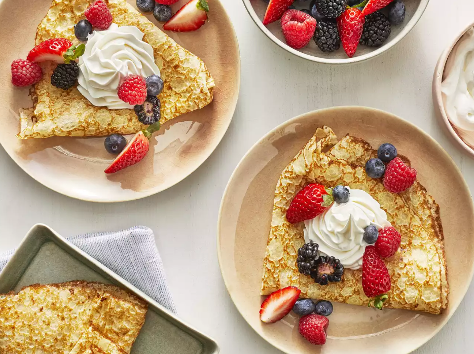

crepe

ingredients
- Flour: These basic French crêpes start with a cup of all-purpose flour.
- Eggs: Eggs act as a binder, which means they help hold the batter together.
- Milk: Milk adds moisture and keeps the crêpes tender.
- Milk: Milk adds moisture and keeps the crêpes tender.
- Salt: A pinch of salt enhances the overall flavor.
- Butter: Butter lends richness and moisture to the crêpes.
steps
- Whisk the milk, water, eggs, and salt.
- Gradually whisk in the flour and butter.
- Scoop the batter onto a hot griddle.
- Cook until lightly browned on the bottom.
- Flip and continue cooking until done on both sides.
home